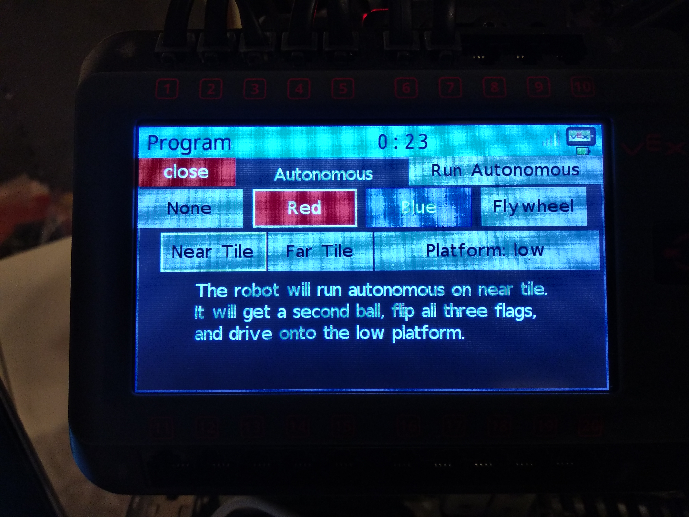
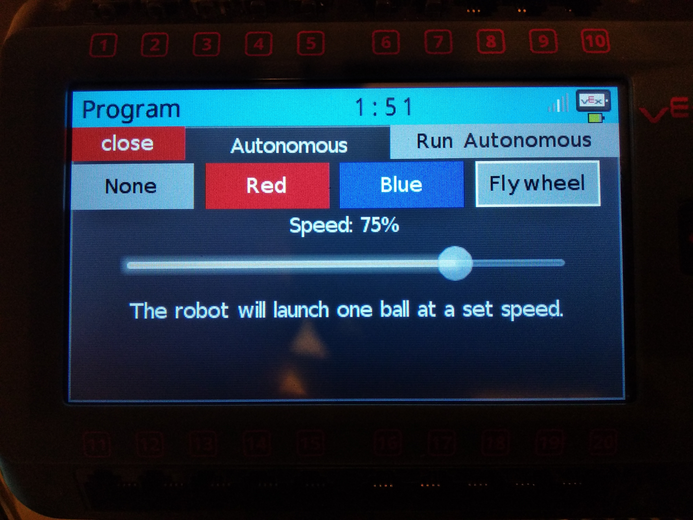

This is a tutorial on how to use LVGL with PROS on Vex V5 Robotics System. LVGL is an Open-source Embedded GUI Library and it comes preintalled with PROS for V5. LVGL's own documentation is great for refrence but not beginner freindly.
This tutorial is for people who have no prior knowledge of LVGL, but want to create advanced autonomous selector menu for V5 (which is better than the legacy lcd emulator).
 
A PROS project contains: opcontrol(), autonomous(),
initialize(), disabled(), and competition_initialize().
The first two are self explanatory, but the other there are were we put most of out LVGL code.
initialize() is always the first function to run when you run you program.
It is recommended that it doesn't run for long because it stops everything else from running even when plugged into the field or competition switch.
This is the function where you should put the screen LVGL initialization code.
disabled() runs while the robot is in the disabled state of field or competition switch, following either autonomous or opcontrol.
When the robot is enabled, this task will exit. This function isn't very important in our case.
competition_initialize() runs after initialize(), and before autonomous when connected to the Field
field or competition switch.
This is intended for competition-specific initialization routines, such as an autonomous selector and it is were you want to enabled you selector.
This task will exit when the robot is enabled and autonomous or opcontrol starts.
In LVGL everything is made of object/elements which are stored as lv_obj_t*.
The objects are create by using lv_<object type>_create(lv_obj_t * parent, lv_obj_t * copy).
The parent must be specified, but the copy can be NULL.
Some common types are: lv_obj_create(), lv_page_create(), lv_label_create(), lv_btn_create();
there are however a lot more types, all of which you can see on LVGL's documentation.
The objects also have a style, how they look, which can be changed.
Style is stored as lv_style_t and it is very important that this doesn't get deallocated;
if it is not a global variable then it must be static. Most objects have multiple differnt styles, for example, a button has
styles for pressed, unpressed, etc.
To set an object's style you use a function like this: lv_obj_set_style(myObject, &myStyle);.
For object with multiple styles you use lv_<object type>_set_style(myObject, <the style type>, myStyle);.
This is how it would look for a button lv_btn_set_style(myButon, LV_BTN_STYLE_REL, myStyle);.
More about style in general can be found here: LVGL style documentation.
The documentation also has all the indiviual styles types for each type of object.
Here is a simple example of a button and a label...
#include "main.h"
lv_obj_t * myButton;
lv_obj_t * myButtonLabel;
lv_obj_t * myLabel;
lv_style_t myButtonStyleREL; //relesed style
lv_style_t myButtonStylePR; //pressed style
static lv_res_t btn_click_action(lv_obj_t * btn)
{
uint8_t id = lv_obj_get_free_num(btn); //id usefull when there are multiple buttons
if(id == 0)
{
char buffer[100];
sprintf(buffer, "button was clicked %i milliseconds from start", pros::millis());
lv_label_set_text(myLabel, buffer);
}
return LV_RES_OK;
}
void initialize()
{
lv_style_copy(&myButtonStyleREL, &lv_style_plain);
myButtonStyleREL.body.main_color = LV_COLOR_MAKE(150, 0, 0);
myButtonStyleREL.body.grad_color = LV_COLOR_MAKE(0, 0, 150);
myButtonStyleREL.body.radius = 0;
myButtonStyleREL.text.color = LV_COLOR_MAKE(255, 255, 255);
lv_style_copy(&myButtonStylePR, &lv_style_plain);
myButtonStylePR.body.main_color = LV_COLOR_MAKE(255, 0, 0);
myButtonStylePR.body.grad_color = LV_COLOR_MAKE(0, 0, 255);
myButtonStylePR.body.radius = 0;
myButtonStylePR.text.color = LV_COLOR_MAKE(255, 255, 255);
myButton = lv_btn_create(lv_scr_act(), NULL); //create button, lv_scr_act() is deafult screen object
lv_obj_set_free_num(myButton, 0); //set button is to 0
lv_btn_set_action(myButton, LV_BTN_ACTION_CLICK, btn_click_action); //set function to be called on button click
lv_btn_set_style(myButton, LV_BTN_STYLE_REL, &myButtonStyleREL); //set the relesed style
lv_btn_set_style(myButton, LV_BTN_STYLE_PR, &myButtonStylePR); //set the pressed style
lv_obj_set_size(myButton, 200, 50); //set the button size
lv_obj_align(myButton, NULL, LV_ALIGN_IN_TOP_LEFT, 10, 10); //set the position to top mid
myButtonLabel = lv_label_create(myButton, NULL); //create label and puts it inside of the button
lv_label_set_text(myButtonLabel, "Click the Button"); //sets label text
myLabel = lv_label_create(lv_scr_act(), NULL); //create label and puts it on the screen
lv_label_set_text(myLabel, "Button has not been clicked yet"); //sets label text
lv_obj_align(myLabel, NULL, LV_ALIGN_LEFT_MID, 10, 0); //set the position to center
}
void disabled() {}
void competition_initialize() {}The above exmple shows how to create labels and buttons. That would be enough to create an autonomous selector with multiple buttons and labels. Other objects, like sliders, are added in a similar way, and there is documentation about all the objects and examples on how to implement them on LVGL's documentation page.
This is how to create variables shared between opcontrol.cpp, autonomous.cpp, and initialize.cpp. Create two files in src, one ending in .cpp and the other ending in .hpp (in my case it is gloabls.cpp and globals.hpp). This is also a good place to put the controller and motor initialization.
#include "main.h"
using namespace pros;
#ifndef GLOBALS
#define GLOBALS
/*
only put declarations in this file
*/
extern pros::Controller master;
extern pros::Controller partner;
extern pros::Motor BL, FL, BR, FR;
extern pros::Motor intake;
extern int autonomousPreSet;
#endif#include "main.h"
pros::Controller master(pros::E_CONTROLLER_MASTER);
pros::Controller partner(pros::E_CONTROLLER_PARTNER);
pros::Motor BL(1), FL(2), BR(3, true), FR(4, true);
pros::Motor intake(5);
int autonomousPreSet = 0;The basic example showed how to create a button with only 2 out of the 6 styles changed. The code was not small and can get vary large and messy with a full autonomous selector containing 4 or more buttons. Here are some functions so that you don't have to write them out...
lv_obj_t * createBtn(lv_obj_t * parent, lv_coord_t x, lv_coord_t y, lv_coord_t width, lv_coord_t height,
int id, const char * title)
{
lv_obj_t * btn = lv_btn_create(parent, NULL);
lv_obj_set_pos(btn, x, y);
lv_obj_set_size(btn, width, height);
lv_obj_set_free_num(btn, id);
lv_obj_t * label = lv_label_create(btn, NULL);
lv_label_set_text(label, title);
lv_obj_align(label, NULL, LV_ALIGN_IN_TOP_MID, 0, 5);
return btn;
}lv_style_t * createBtnStyle(lv_style_t * copy, lv_color_t rel, lv_color_t pr,
lv_color_t tglRel, lv_color_t tglPr, lv_color_t tglBorder, lv_color_t textColor, lv_obj_t * btn)
{
lv_style_t * btnStyle = (lv_style_t *)malloc(sizeof(lv_style_t) * 4);
for(int i = 0; i < 4; i++) lv_style_copy(&btnStyle[i], copy);
btnStyle[0].body.main_color = rel;
btnStyle[0].body.grad_color = rel;
btnStyle[0].text.color = textColor;
btnStyle[1].body.main_color = pr;
btnStyle[1].body.grad_color = pr;
btnStyle[1].text.color = textColor;
btnStyle[2].body.main_color = tglRel;
btnStyle[2].body.grad_color = tglRel;
btnStyle[2].body.border.width = 2;
btnStyle[2].body.border.color = tglBorder;
btnStyle[2].text.color = textColor;
btnStyle[3].body.main_color = tglPr;
btnStyle[3].body.grad_color = tglPr;
btnStyle[3].body.border.width = 2;
btnStyle[3].body.border.color = tglBorder;
btnStyle[3].text.color = textColor;
lv_btn_set_style(btn, LV_BTN_STYLE_REL, &btnStyle[0]);
lv_btn_set_style(btn, LV_BTN_STYLE_PR, &btnStyle[1]);
lv_btn_set_style(btn, LV_BTN_STYLE_TGL_REL, &btnStyle[2]);
lv_btn_set_style(btn, LV_BTN_STYLE_TGL_PR, &btnStyle[3]);
return btnStyle;
}
void setBtnStyle(lv_style_t * btnStyle, lv_obj_t * btn)
{
lv_btn_set_style(btn, LV_BTN_STYLE_REL, &btnStyle[0]);
lv_btn_set_style(btn, LV_BTN_STYLE_PR, &btnStyle[1]);
lv_btn_set_style(btn, LV_BTN_STYLE_TGL_REL, &btnStyle[2]);
lv_btn_set_style(btn, LV_BTN_STYLE_TGL_PR, &btnStyle[3]);
}This function is nice to have to toggle a button because the defualt function is not very good.
void btnSetToggled(lv_obj_t * btn, bool toggled)
{
if(toggled != (lv_btn_get_state(btn) >= 2)) lv_btn_toggle(btn);
}
LVGL has lv_page_create which is usefull for more complex autonomous seletors.
Pages are used to hold items and have scrolling when the content takes up too much room.
Also LVGL has a function, lv_obj_set_hidden(lv_obj_t * object, bool hidden)
which can be used to switch between differnt pages. For example one page is an autonomous selector and another can
display data during user control and autonomous.